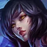
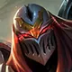
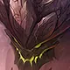
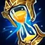
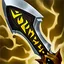
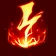
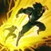

Cómo funciona
-
Elige tu campeón y tu rol
Toca tu casilla, busca a tu main y dinos si vas a Barón, Jungla, Mid, Dragón o Soporte.

-
Elige a los 5 rivales
Pon a los cinco del otro equipo. Así sabemos si hay mucho AP, AD, tanques o curación.


-
Dinos cómo va la partida
Parejo, Vas ganando o Vas perdiendo. La build se ajusta a cómo vas.
Listo
Te damos 6 ítems con el porqué, runas, hechizos y una tarjeta por cada enemigo con el ítem que lo para.




Compártela
Copia el link de tu build o compártelo directo con tu dúo. Abre con todo ya elegido.
Estamos en beta
Las builds salen de reglas armadas para el parche 7.3a, no de estadísticas de partidas. Dale a “¿Te sirvió?” para que la mejoremos.